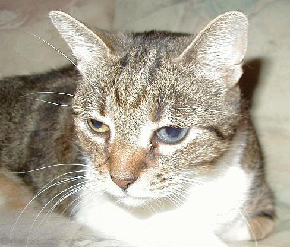
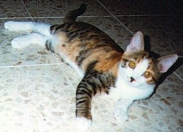

The Official FelineVWM
Homepage - Cats :-)
FVWM would not have been possible without the tails, ears and the
little paws of the coziest beings in the world: our cats. Well, perhaps
we could have done without the paws. If your pet ever walked straight over
your keyboard, chased your mouse pointer (yes, I know cats are supposed
to catch mice, but still...) or fell asleep on your trackball you know
what I mean. ^_^
Dominik's cats:
Kassandra
female, * 1989, + on 23rd of June in 2000 (bitten to death by a dog
right there where you see her on the picture)

Kassandra was my favourite before I got Niniel, Luthien and Tilion.
I had to leave her behind when I moved to Southern Germany. I loved her
very much and I did not want to force her to move with me. We got them
at the age of 1 and a half years and it took three month before she came
down from the heating pipes in our cellar.
Luthien
female, * 13th of September 1998, + run over by a car on 18th of March
1999)

Was the most beautiful kitten I've ever seen. She was my favourite
cat the instant I saw her (she was hiding in the attic and hissed when
I came too close). Had the strongest character and the largest eyes of
the three. I miss her so much!
Niniel
(full name: Niniel Nienor), female, * 13th of September 1998

The smallest and cutest of my three cats. A saucy little whirlwind
that loves piddling on my bed and sofa. I have to find a better photograph.
Tilion
(male, * 13th of September 1998)

The biggest of my three cats. Hobbies: feeding and squawking. Once
we tested when Tilion would stop feeding, but had to break off the experiment
when we ran out of cat food.
Geoffrey and Pepper
male, * 1988, Pepper missing for years now
Two big black tomcats with a few white patches on the belly. Most of
the time when not feeding or sleeping they stray around the neighbourhood.
Geoffrey is the terror of the cats in the area. I had to leave him behind
when I moved to Althengstett.
Blacky and Tiger
female and male, * 1980, Tiger was given away when he was one and a
half years old, Blacky was shot by a forest warden in 1987.

I can hardly remember those two. Tiger was given away because he slobbered
in the lap of our visitors (we never forgave our parents). Have you seen
his ears? Perhaps we had better called him 'Radar'. Blacky was a great
hunter and the most undemanding cat we had. She suffered terribly when
she was shot before the doctor put her to sleep.
Dan's cat:
Angel
Rescued from the front window of a deli,
Angel leads an indoor cats life.
To save our furniture Angel's front claws are removed.
I believe, as a direct consequence,
she's one of the most dangerous cats I've encountered.
Thats right, watch out for this cat, she bites, hard.

Hippo's cats:
Corky
Champion rat catcher. Proper name Corkscrew because he spent the
first five minutes of his life going around in circles until he discovered
that he had hind legs.

Scotty
A Garfield fan. Originally named after Robert Falcon Scott the famous (if
you're British) polar explorer as she was the first kitten to make it to the top
the curtains and the only cat I know of to have gone up the inside of a pair of
trousers hanging in a wardrobe. She has since lost the travel bug and spends her
time testing the sofa for long term comfort.

Sir Boris II
A strange looking cat with a taste for grass, carrots, bananas and
blackcurrant juice.

Bob's cat:
Tiny
A playful lynx-point Siamese, she probably understands more about the FVWM
code than I do by now.

|
The only problem is getting her to stop typing while I'm trying to type. (Like I
said, she's playful.)
|
One of these days, I'll try to get a picture of her in a debugging session, and
a picture of her sister.
Mikhael's cat:
Murzilka
(short name: Murzya), a lovely kitty, from May 1999. She loves
to play with a mouse pointer on the monitor and watch dynamic screensavers
(geek cat?).

|
The regular pose, she is lazy, but is always ready to jump.
|
Olivier's cat:
Lili
A sweet and emotional cat, from September 1992. She does not
like especially computers except when she wants her diner!

|
She likes mouses but I have a touch pad ...
|
Brad's cat:
Blaise
You guessed it Blaise after Blaise Pascal, what else would you expect from
a programmer, and a math loving wife. Blaise is in her usual spot waiting for
dinner, she is good at telling time her clock is just an hour fast.

What we love about our cats:
-
Their ears, tails and paws. And don't forget the whiskers.
-
Each one is a unique character.
-
Purring and cuddling.
-
Sleeping next to the keyboard.
What we don't:
-
Piddling on the bed.
-
Screeching for food.
-
Sleeping on the keyboard.
Quotes and trivia:
-
"Cats are like people: the females are the prickly ones and the males are
good-natured idiots."
-
"Will he ever stop feeding?"
-
"Ta-tadi, tatatatataaaa! Dies sind die Abenteuer des Raumschiffs
Katerschweif." (Sorry, can't translate this to English.)
-
Did you ever try to find the 'Pussy Versand' in the internet? You may get
a lot of hits with carelessly chosen search words. [German: Versand = English:
mail order firm].
-
Did you know that cats sleep about 16 hours a day?
-
54lopbg2qw^^^^^^^^^^^^^^^^^^^^^^^^^^^^^^^^^^^^^^^ "Tilion! Down from my
keyboard, NOW!"
-
"Mrkgnaow!" - Tiny (who read a lot of James Joyce as an undergraduate)